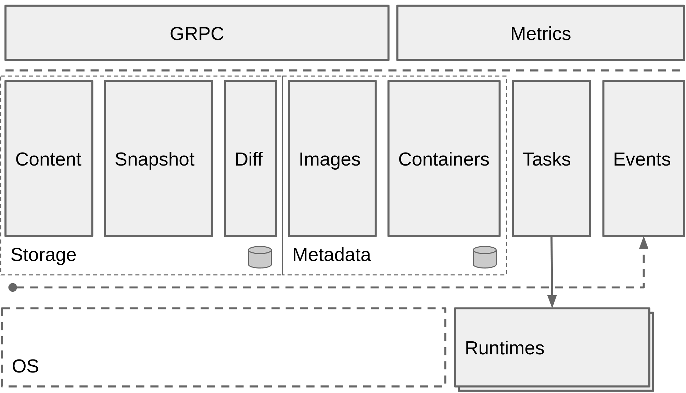
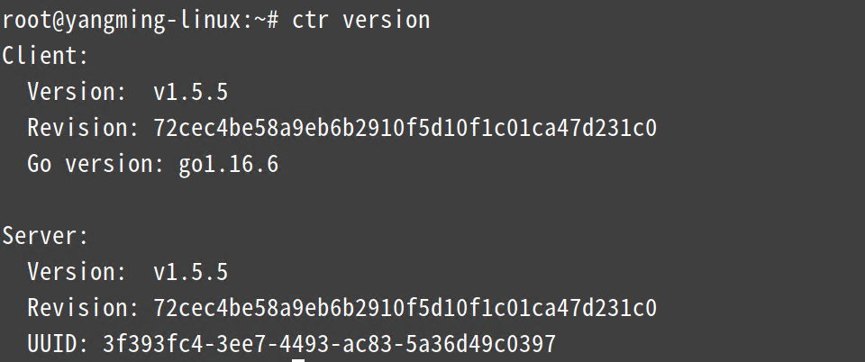

Containerd¶
我们知道很早之前的 Docker Engine 中就有了 containerd，只不过现在是将 containerd 从 Docker Engine 里分离出来，作为一个独立的开源项目，目标是提供一个更加开放、稳定的容器运行基础设施。分离出来的 containerd 将具有更多的功能，涵盖整个容器运行时管理的所有需求，提供更强大的支持。
containerd 是一个工业级标准的容器运行时，它强调简单性、健壮性和可移植性，containerd 可以负责干下面这些事情：
- 管理容器的生命周期（从创建容器到销毁容器）
- 拉取/推送容器镜像
- 存储管理（管理镜像及容器数据的存储）
- 调用 runc 运行容器（与 runc 等容器运行时交互）
- 管理容器网络接口及网络
架构¶
containerd 可用作 Linux 和 Windows 的守护程序，它管理其主机系统完整的容器生命周期，从镜像传输和存储到容器执行和监测，再到底层存储到网络附件等等。

上图是 containerd 官方提供的架构图，可以看出 containerd 采用的也是 C/S 架构，服务端通过 unix domain socket 暴露低层的 gRPC API 接口出去，客户端通过这些 API 管理节点上的容器，每个 containerd 只负责一台机器，Pull 镜像，对容器的操作（启动、停止等），网络，存储都是由 containerd 完成。具体运行容器由 runc 负责，实际上只要是符合 OCI 规范的容器都可以支持。
为了解耦，containerd 将系统划分成了不同的组件，每个组件都由一个或多个模块协作完成（Core 部分），每一种类型的模块都以插件的形式集成到 Containerd 中，而且插件之间是相互依赖的，例如，上图中的每一个长虚线的方框都表示一种类型的插件，包括 Service Plugin、Metadata Plugin、GC Plugin、Runtime Plugin 等，其中 Service Plugin 又会依赖 Metadata Plugin、GC Plugin 和 Runtime Plugin。每一个小方框都表示一个细分的插件，例如 Metadata Plugin 依赖 Containers Plugin、Content Plugin 等。比如:
- Content Plugin: 提供对镜像中可寻址内容的访问，所有不可变的内容都被存储在这里。
- Snapshot Plugin: 用来管理容器镜像的文件系统快照，镜像中的每一层都会被解压成文件系统快照，类似于Docker 中的 graphdriver。
总体来看 containerd 可以分为三个大块：Storage、Metadata 和 Runtime。

安装¶
这里我使用的系统是 CentOS 7.6，首先需要安装 seccomp 依赖：
➜ ~ rpm -qa |grep libseccomp
libseccomp-2.3.1-4.el7.x86_64
# 如果没有安装 libseccomp 包则执行下面的命令安装依赖
➜ ~ yum install wget -y
➜ ~ wget http://mirror.centos.org/centos/7/os/x86_64/Packages/libseccomp-2.3.1-4.el7.x86_64.rpm
➜ ~ yum install libseccomp-2.3.1-4.el7.x86_64.rpm -y
由于 containerd 需要调用 runc，所以我们也需要先安装 runc，不过 containerd 提供了一个包含相关依赖的压缩包 cri-containerd-cni-${VERSION}.${OS}-${ARCH}.tar.gz，可以直接使用这个包来进行安装。首先从 release 页面下载最新版本的压缩包，当前为 1.5.5 版本（最新的1.5.7版本在CentOS7下面执行 runc 会报错：https://github.com/containerd/containerd/issues/6091）：
➜ ~ wget https://github.com/containerd/containerd/releases/download/v1.5.5/cri-containerd-cni-1.5.5-linux-amd64.tar.gz
# 如果有限制，也可以替换成下面的 URL 加速下载
# wget https://download.fastgit.org/containerd/containerd/releases/download/v1.5.5/cri-containerd-cni-1.5.5-linux-amd64.tar.gz
➜ ~ tar -tf cri-containerd-cni-1.5.5-linux-amd64.tar.gz
etc/
etc/cni/
etc/cni/net.d/
etc/cni/net.d/10-containerd-net.conflist
etc/crictl.yaml
etc/systemd/
etc/systemd/system/
etc/systemd/system/containerd.service
usr/
usr/local/
usr/local/bin/
usr/local/bin/containerd-shim-runc-v2
usr/local/bin/ctr
usr/local/bin/containerd-shim
usr/local/bin/containerd-shim-runc-v1
usr/local/bin/crictl
usr/local/bin/critest
usr/local/bin/containerd
usr/local/sbin/
usr/local/sbin/runc
opt/
opt/cni/
opt/cni/bin/
opt/cni/bin/vlan
opt/cni/bin/host-local
opt/cni/bin/flannel
opt/cni/bin/bridge
opt/cni/bin/host-device
opt/cni/bin/tuning
opt/cni/bin/firewall
opt/cni/bin/bandwidth
opt/cni/bin/ipvlan
opt/cni/bin/sbr
opt/cni/bin/dhcp
opt/cni/bin/portmap
opt/cni/bin/ptp
opt/cni/bin/static
opt/cni/bin/macvlan
opt/cni/bin/loopback
opt/containerd/
opt/containerd/cluster/
opt/containerd/cluster/version
opt/containerd/cluster/gce/
opt/containerd/cluster/gce/cni.template
opt/containerd/cluster/gce/configure.sh
opt/containerd/cluster/gce/cloud-init/
opt/containerd/cluster/gce/cloud-init/master.yaml
opt/containerd/cluster/gce/cloud-init/node.yaml
opt/containerd/cluster/gce/env
/usr/local/bin 和 /usr/local/sbin 追加到 ~/.bashrc 文件的 PATH 环境变量中：
然后执行下面的命令使其立即生效：
containerd 的默认配置文件为 /etc/containerd/config.toml，我们可以通过如下所示的命令生成一个默认的配置：
由于上面我们下载的 containerd 压缩包中包含一个 etc/systemd/system/containerd.service 的文件，这样我们就可以通过 systemd 来配置 containerd 作为守护进程运行了，内容如下所示：
➜ ~ cat /etc/systemd/system/containerd.service
[Unit]
Description=containerd container runtime
Documentation=https://containerd.io
After=network.target local-fs.target
[Service]
ExecStartPre=-/sbin/modprobe overlay
ExecStart=/usr/local/bin/containerd
Type=notify
Delegate=yes
KillMode=process
Restart=always
RestartSec=5
# Having non-zero Limit*s causes performance problems due to accounting overhead
# in the kernel. We recommend using cgroups to do container-local accounting.
LimitNPROC=infinity
LimitCORE=infinity
LimitNOFILE=1048576
# Comment TasksMax if your systemd version does not supports it.
# Only systemd 226 and above support this version.
TasksMax=infinity
OOMScoreAdjust=-999
[Install]
WantedBy=multi-user.target
这里有两个重要的参数：
-
Delegate: 这个选项允许 containerd 以及运行时自己管理自己创建容器的 cgroups。如果不设置这个选项，systemd 就会将进程移到自己的 cgroups 中，从而导致 containerd 无法正确获取容器的资源使用情况。 -
KillMode: 这个选项用来处理 containerd 进程被杀死的方式。默认情况下，systemd 会在进程的 cgroup 中查找并杀死 containerd 的所有子进程。KillMode 字段可以设置的值如下。control-group（默认值）：当前控制组里面的所有子进程，都会被杀掉process：只杀主进程mixed：主进程将收到 SIGTERM 信号，子进程收到 SIGKILL 信号none：没有进程会被杀掉，只是执行服务的 stop 命令
我们需要将 KillMode 的值设置为 process，这样可以确保升级或重启 containerd 时不杀死现有的容器。
现在我们就可以启动 containerd 了，直接执行下面的命令即可：
启动完成后就可以使用 containerd 的本地 CLI 工具 ctr 了，比如查看版本： 
配置¶
我们首先来查看下上面默认生成的配置文件 /etc/containerd/config.toml：
disabled_plugins = []
imports = []
oom_score = 0
plugin_dir = ""
required_plugins = []
root = "/var/lib/containerd"
state = "/run/containerd"
version = 2
[cgroup]
path = ""
[debug]
address = ""
format = ""
gid = 0
level = ""
uid = 0
[grpc]
address = "/run/containerd/containerd.sock"
gid = 0
max_recv_message_size = 16777216
max_send_message_size = 16777216
tcp_address = ""
tcp_tls_cert = ""
tcp_tls_key = ""
uid = 0
[metrics]
address = ""
grpc_histogram = false
[plugins]
[plugins."io.containerd.gc.v1.scheduler"]
deletion_threshold = 0
mutation_threshold = 100
pause_threshold = 0.02
schedule_delay = "0s"
startup_delay = "100ms"
[plugins."io.containerd.grpc.v1.cri"]
disable_apparmor = false
disable_cgroup = false
disable_hugetlb_controller = true
disable_proc_mount = false
disable_tcp_service = true
enable_selinux = false
enable_tls_streaming = false
ignore_image_defined_volumes = false
max_concurrent_downloads = 3
max_container_log_line_size = 16384
netns_mounts_under_state_dir = false
restrict_oom_score_adj = false
sandbox_image = "k8s.gcr.io/pause:3.5"
selinux_category_range = 1024
stats_collect_period = 10
stream_idle_timeout = "4h0m0s"
stream_server_address = "127.0.0.1"
stream_server_port = "0"
systemd_cgroup = false
tolerate_missing_hugetlb_controller = true
unset_seccomp_profile = ""
[plugins."io.containerd.grpc.v1.cri".cni]
bin_dir = "/opt/cni/bin"
conf_dir = "/etc/cni/net.d"
conf_template = ""
max_conf_num = 1
[plugins."io.containerd.grpc.v1.cri".containerd]
default_runtime_name = "runc"
disable_snapshot_annotations = true
discard_unpacked_layers = false
no_pivot = false
snapshotter = "overlayfs"
[plugins."io.containerd.grpc.v1.cri".containerd.default_runtime]
base_runtime_spec = ""
container_annotations = []
pod_annotations = []
privileged_without_host_devices = false
runtime_engine = ""
runtime_root = ""
runtime_type = ""
[plugins."io.containerd.grpc.v1.cri".containerd.default_runtime.options]
[plugins."io.containerd.grpc.v1.cri".containerd.runtimes]
[plugins."io.containerd.grpc.v1.cri".containerd.runtimes.runc]
base_runtime_spec = ""
container_annotations = []
pod_annotations = []
privileged_without_host_devices = false
runtime_engine = ""
runtime_root = ""
runtime_type = "io.containerd.runc.v2"
[plugins."io.containerd.grpc.v1.cri".containerd.runtimes.runc.options]
BinaryName = ""
CriuImagePath = ""
CriuPath = ""
CriuWorkPath = ""
IoGid = 0
IoUid = 0
NoNewKeyring = false
NoPivotRoot = false
Root = ""
ShimCgroup = ""
SystemdCgroup = false
[plugins."io.containerd.grpc.v1.cri".containerd.untrusted_workload_runtime]
base_runtime_spec = ""
container_annotations = []
pod_annotations = []
privileged_without_host_devices = false
runtime_engine = ""
runtime_root = ""
runtime_type = ""
[plugins."io.containerd.grpc.v1.cri".containerd.untrusted_workload_runtime.options]
[plugins."io.containerd.grpc.v1.cri".image_decryption]
key_model = "node"
[plugins."io.containerd.grpc.v1.cri".registry]
config_path = ""
[plugins."io.containerd.grpc.v1.cri".registry.auths]
[plugins."io.containerd.grpc.v1.cri".registry.configs]
[plugins."io.containerd.grpc.v1.cri".registry.headers]
[plugins."io.containerd.grpc.v1.cri".registry.mirrors]
[plugins."io.containerd.grpc.v1.cri".x509_key_pair_streaming]
tls_cert_file = ""
tls_key_file = ""
[plugins."io.containerd.internal.v1.opt"]
path = "/opt/containerd"
[plugins."io.containerd.internal.v1.restart"]
interval = "10s"
[plugins."io.containerd.metadata.v1.bolt"]
content_sharing_policy = "shared"
[plugins."io.containerd.monitor.v1.cgroups"]
no_prometheus = false
[plugins."io.containerd.runtime.v1.linux"]
no_shim = false
runtime = "runc"
runtime_root = ""
shim = "containerd-shim"
shim_debug = false
[plugins."io.containerd.runtime.v2.task"]
platforms = ["linux/amd64"]
[plugins."io.containerd.service.v1.diff-service"]
default = ["walking"]
[plugins."io.containerd.snapshotter.v1.aufs"]
root_path = ""
[plugins."io.containerd.snapshotter.v1.btrfs"]
root_path = ""
[plugins."io.containerd.snapshotter.v1.devmapper"]
async_remove = false
base_image_size = ""
pool_name = ""
root_path = ""
[plugins."io.containerd.snapshotter.v1.native"]
root_path = ""
[plugins."io.containerd.snapshotter.v1.overlayfs"]
root_path = ""
[plugins."io.containerd.snapshotter.v1.zfs"]
root_path = ""
[proxy_plugins]
[stream_processors]
[stream_processors."io.containerd.ocicrypt.decoder.v1.tar"]
accepts = ["application/vnd.oci.image.layer.v1.tar+encrypted"]
args = ["--decryption-keys-path", "/etc/containerd/ocicrypt/keys"]
env = ["OCICRYPT_KEYPROVIDER_CONFIG=/etc/containerd/ocicrypt/ocicrypt_keyprovider.conf"]
path = "ctd-decoder"
returns = "application/vnd.oci.image.layer.v1.tar"
[stream_processors."io.containerd.ocicrypt.decoder.v1.tar.gzip"]
accepts = ["application/vnd.oci.image.layer.v1.tar+gzip+encrypted"]
args = ["--decryption-keys-path", "/etc/containerd/ocicrypt/keys"]
env = ["OCICRYPT_KEYPROVIDER_CONFIG=/etc/containerd/ocicrypt/ocicrypt_keyprovider.conf"]
path = "ctd-decoder"
returns = "application/vnd.oci.image.layer.v1.tar+gzip"
[timeouts]
"io.containerd.timeout.shim.cleanup" = "5s"
"io.containerd.timeout.shim.load" = "5s"
"io.containerd.timeout.shim.shutdown" = "3s"
"io.containerd.timeout.task.state" = "2s"
[ttrpc]
address = ""
gid = 0
uid = 0
这个配置文件比较复杂，我们可以将重点放在其中的 plugins 配置上面，仔细观察我们可以发现每一个顶级配置块的命名都是 plugins."io.containerd.xxx.vx.xxx" 这种形式，每一个顶级配置块都表示一个插件，其中 io.containerd.xxx.vx 表示插件的类型，vx 后面的 xxx 表示插件的 ID，我们可以通过 ctr 查看插件列表：
➜ ~ ctr plugin ls
ctr plugin ls
TYPE ID PLATFORMS STATUS
io.containerd.content.v1 content - ok
io.containerd.snapshotter.v1 aufs linux/amd64 ok
io.containerd.snapshotter.v1 btrfs linux/amd64 skip
io.containerd.snapshotter.v1 devmapper linux/amd64 error
io.containerd.snapshotter.v1 native linux/amd64 ok
io.containerd.snapshotter.v1 overlayfs linux/amd64 ok
io.containerd.snapshotter.v1 zfs linux/amd64 skip
io.containerd.metadata.v1 bolt - ok
io.containerd.differ.v1 walking linux/amd64 ok
io.containerd.gc.v1 scheduler - ok
io.containerd.service.v1 introspection-service - ok
io.containerd.service.v1 containers-service - ok
io.containerd.service.v1 content-service - ok
io.containerd.service.v1 diff-service - ok
io.containerd.service.v1 images-service - ok
io.containerd.service.v1 leases-service - ok
io.containerd.service.v1 namespaces-service - ok
io.containerd.service.v1 snapshots-service - ok
io.containerd.runtime.v1 linux linux/amd64 ok
io.containerd.runtime.v2 task linux/amd64 ok
io.containerd.monitor.v1 cgroups linux/amd64 ok
io.containerd.service.v1 tasks-service - ok
io.containerd.internal.v1 restart - ok
io.containerd.grpc.v1 containers - ok
io.containerd.grpc.v1 content - ok
io.containerd.grpc.v1 diff - ok
io.containerd.grpc.v1 events - ok
io.containerd.grpc.v1 healthcheck - ok
io.containerd.grpc.v1 images - ok
io.containerd.grpc.v1 leases - ok
io.containerd.grpc.v1 namespaces - ok
io.containerd.internal.v1 opt - ok
io.containerd.grpc.v1 snapshots - ok
io.containerd.grpc.v1 tasks - ok
io.containerd.grpc.v1 version - ok
io.containerd.grpc.v1 cri linux/amd64 ok
顶级配置块下面的子配置块表示该插件的各种配置，比如 cri 插件下面就分为 containerd、cni 和 registry 的配置，而 containerd 下面又可以配置各种 runtime，还可以配置默认的 runtime。比如现在我们要为镜像配置一个加速器，那么就需要在 cri 配置块下面的 registry 配置块下面进行配置 registry.mirrors：
[plugins."io.containerd.grpc.v1.cri".registry]
[plugins."io.containerd.grpc.v1.cri".registry.mirrors]
[plugins."io.containerd.grpc.v1.cri".registry.mirrors."docker.io"]
endpoint = ["https://bqr1dr1n.mirror.aliyuncs.com"]
[plugins."io.containerd.grpc.v1.cri".registry.mirrors."k8s.gcr.io"]
endpoint = ["https://registry.aliyuncs.com/k8sxio"]
registry.mirrors."xxx": 表示需要配置 mirror 的镜像仓库，例如registry.mirrors."docker.io"表示配置 docker.io 的 mirror。endpoint: 表示提供 mirror 的镜像加速服务，比如我们可以注册一个阿里云的镜像服务来作为 docker.io 的 mirror。
另外在默认配置中还有两个关于存储的配置路径：
其中root 是用来保存持久化数据，包括 Snapshots, Content, Metadata 以及各种插件的数据，每一个插件都有自己单独的目录，Containerd 本身不存储任何数据，它的所有功能都来自于已加载的插件。
而另外的 state 是用来保存运行时的临时数据的，包括 sockets、pid、挂载点、运行时状态以及不需要持久化的插件数据。
使用¶
我们知道 Docker CLI 工具提供了需要增强用户体验的功能，containerd 同样也提供一个对应的 CLI 工具：ctr，不过 ctr 的功能没有 docker 完善，但是关于镜像和容器的基本功能都是有的。接下来我们就先简单介绍下 ctr 的使用。
帮助
直接输入 ctr 命令即可获得所有相关的操作命令使用方式：
➜ ~ ctr
NAME:
ctr -
__
_____/ /______
/ ___/ __/ ___/
/ /__/ /_/ /
\___/\__/_/
containerd CLI
USAGE:
ctr [global options] command [command options] [arguments...]
VERSION:
v1.5.5
DESCRIPTION:
ctr is an unsupported debug and administrative client for interacting
with the containerd daemon. Because it is unsupported, the commands,
options, and operations are not guaranteed to be backward compatible or
stable from release to release of the containerd project.
COMMANDS:
plugins, plugin provides information about containerd plugins
version print the client and server versions
containers, c, container manage containers
content manage content
events, event display containerd events
images, image, i manage images
leases manage leases
namespaces, namespace, ns manage namespaces
pprof provide golang pprof outputs for containerd
run run a container
snapshots, snapshot manage snapshots
tasks, t, task manage tasks
install install a new package
oci OCI tools
shim interact with a shim directly
help, h Shows a list of commands or help for one command
GLOBAL OPTIONS:
--debug enable debug output in logs
--address value, -a value address for containerd's GRPC server (default: "/run/containerd/containerd.sock") [$CONTAINERD_ADDRESS]
--timeout value total timeout for ctr commands (default: 0s)
--connect-timeout value timeout for connecting to containerd (default: 0s)
--namespace value, -n value namespace to use with commands (default: "default") [$CONTAINERD_NAMESPACE]
--help, -h show help
--version, -v print the version
镜像操作¶
拉取镜像
拉取镜像可以使用 tr image pull 来完成，比如拉取 Docker Hub 官方镜像 nginx:alpine，需要注意的是镜像地址需要加上 docker.io Host 地址：
➜ ~ ctr image pull docker.io/library/nginx:alpine
docker.io/library/nginx:alpine: resolved |++++++++++++++++++++++++++++++++++++++|
index-sha256:bead42240255ae1485653a956ef41c9e458eb077fcb6dc664cbc3aa9701a05ce: exists |++++++++++++++++++++++++++++++++++++++|
manifest-sha256:ce6ca11a3fa7e0e6b44813901e3289212fc2f327ee8b1366176666e8fb470f24: done |++++++++++++++++++++++++++++++++++++++|
layer-sha256:9a6ac07b84eb50935293bb185d0a8696d03247f74fd7d43ea6161dc0f293f81f: done |++++++++++++++++++++++++++++++++++++++|
layer-sha256:e82f830de071ebcda58148003698f32205b7970b01c58a197ac60d6bb79241b0: done |++++++++++++++++++++++++++++++++++++++|
layer-sha256:d7c9fa7589ae28cd3306b204d5dd9a539612593e35df70f7a1d69ff7548e74cf: done |++++++++++++++++++++++++++++++++++++++|
layer-sha256:bf2b3ee132db5b4c65432e53aca69da4e609c6cb154e0d0e14b2b02259e9c1e3: done |++++++++++++++++++++++++++++++++++++++|
config-sha256:7ce0143dee376bfd2937b499a46fb110bda3c629c195b84b1cf6e19be1a9e23b: done |++++++++++++++++++++++++++++++++++++++|
layer-sha256:3c1eaf69ff492177c34bdbf1735b6f2e5400e417f8f11b98b0da878f4ecad5fb: done |++++++++++++++++++++++++++++++++++++++|
layer-sha256:29291e31a76a7e560b9b7ad3cada56e8c18d50a96cca8a2573e4f4689d7aca77: done |++++++++++++++++++++++++++++++++++++++|
elapsed: 11.9s total: 8.7 Mi (748.1 KiB/s)
unpacking linux/amd64 sha256:bead42240255ae1485653a956ef41c9e458eb077fcb6dc664cbc3aa9701a05ce...
done: 410.86624ms
--platform 选项指定对应平台的镜像。当然对应的也有推送镜像的命令 ctr image push，如果是私有镜像则在推送的时候可以通过 --user 来自定义仓库的用户名和密码。
列出本地镜像
➜ ~ ctr image ls
REF TYPE DIGEST SIZE PLATFORMS LABELS
docker.io/library/nginx:alpine application/vnd.docker.distribution.manifest.list.v2+json sha256:bead42240255ae1485653a956ef41c9e458eb077fcb6dc664cbc3aa9701a05ce 9.5 MiB linux/386,linux/amd64,linux/arm/v6,linux/arm/v7,linux/arm64/v8,linux/ppc64le,linux/s390x -
➜ ~ ctr image ls -q
docker.io/library/nginx:alpine
-q（--quiet） 选项可以只打印镜像名称。
检测本地镜像
➜ ~ ctr image check
REF TYPE DIGEST STATUS SIZE UNPACKED
docker.io/library/nginx:alpine application/vnd.docker.distribution.manifest.list.v2+json sha256:bead42240255ae1485653a956ef41c9e458eb077fcb6dc664cbc3aa9701a05ce complete (7/7) 9.5 MiB/9.5 MiB true
STATUS，complete 表示镜像是完整可用的状态。
重新打标签
同样的我们也可以重新给指定的镜像打一个 Tag：
➜ ~ ctr image tag docker.io/library/nginx:alpine harbor.k8s.local/course/nginx:alpine
harbor.k8s.local/course/nginx:alpine
➜ ~ ctr image ls -q
docker.io/library/nginx:alpine
harbor.k8s.local/course/nginx:alpine
删除镜像
不需要使用的镜像也可以使用 ctr image rm 进行删除：
➜ ~ ctr image rm harbor.k8s.local/course/nginx:alpine
harbor.k8s.local/course/nginx:alpine
➜ ~ ctr image ls -q
docker.io/library/nginx:alpine
--sync 选项可以同步删除镜像和所有相关的资源。
将镜像挂载到主机目录
➜ ~ ctr image mount docker.io/library/nginx:alpine /mnt
sha256:c3554b2d61e3c1cffcaba4b4fa7651c644a3354efaafa2f22cb53542f6c600dc
/mnt
➜ ~ tree -L 1 /mnt
/mnt
├── bin
├── dev
├── docker-entrypoint.d
├── docker-entrypoint.sh
├── etc
├── home
├── lib
├── media
├── mnt
├── opt
├── proc
├── root
├── run
├── sbin
├── srv
├── sys
├── tmp
├── usr
└── var
18 directories, 1 file
ctr: content digest sha256:xxxxxx not found 的错误，要解决这个办法需要 pull 所有平台镜像：
➜ ~ ctr i pull --all-platforms docker.io/library/nginx:alpine
➜ ~ ctr i export --all-platforms nginx.tar.gz docker.io/library/nginx:alpine
➜ ~ ctr i rm docker.io/library/nginx:alpine
➜ ~ ctr i import nginx.tar.gz
容器操作¶
容器相关操作可以通过 ctr container 获取。
创建容器
➜ ~ ctr container ls
CONTAINER IMAGE RUNTIME
nginx docker.io/library/nginx:alpine io.containerd.runc.v2
docker inspect 功能。
➜ ~ ctr container info nginx
{
"ID": "nginx",
"Labels": {
"io.containerd.image.config.stop-signal": "SIGQUIT"
},
"Image": "docker.io/library/nginx:alpine",
"Runtime": {
"Name": "io.containerd.runc.v2",
"Options": {
"type_url": "containerd.runc.v1.Options"
}
},
"SnapshotKey": "nginx",
"Snapshotter": "overlayfs",
"CreatedAt": "2021-08-12T08:23:13.792871558Z",
"UpdatedAt": "2021-08-12T08:23:13.792871558Z",
"Extensions": null,
"Spec": {
......
rm 子命令之外也可以使用 delete 或者 del 删除容器。
任务¶
上面我们通过 container create 命令创建的容器，并没有处于运行状态，只是一个静态的容器。一个 container 对象只是包含了运行一个容器所需的资源及相关配置数据，表示 namespaces、rootfs 和容器的配置都已经初始化成功了，只是用户进程还没有启动。
一个容器真正运行起来是由 Task 任务实现的，Task 可以为容器设置网卡，还可以配置工具来对容器进行监控等。
Task 相关操作可以通过 ctr task 获取，如下我们通过 Task 来启动容器：
➜ ~ ctr task start -d nginx
/docker-entrypoint.sh: /docker-entrypoint.d/ is not empty, will attempt to perform configuration
/docker-entrypoint.sh: Looking for shell scripts in /docker-entrypoint.d/
task ls 查看正在运行的容器：
同样也可以使用 exec 命令进入容器进行操作：
不过这里需要注意必须要指定 --exec-id 参数，这个 id 可以随便写，只要唯一就行。
暂停容器，和 docker pause 类似的功能：
PAUSED：
同样也可以使用 resume 命令来恢复容器：
不过需要注意 ctr 没有 stop 容器的功能，只能暂停或者杀死容器。杀死容器可以使用 task kill 命令:
杀掉容器后可以看到容器的状态变成了 STOPPED。同样也可以通过 task rm 命令删除 Task：
除此之外我们还可以获取容器的 cgroup 相关信息，可以使用 task metrics 命令用来获取容器的内存、CPU 和 PID 的限额与使用量。
# 重新启动容器
➜ ~ ctr task metrics nginx
ID TIMESTAMP
nginx 2021-08-12 08:50:46.952769941 +0000 UTC
METRIC VALUE
memory.usage_in_bytes 8855552
memory.limit_in_bytes 9223372036854771712
memory.stat.cache 0
cpuacct.usage 22467106
cpuacct.usage_percpu [2962708 860891 1163413 1915748 1058868 2888139 6159277 5458062]
pids.current 9
pids.limit 0
task ps 命令查看容器中所有进程在宿主机中的 PID：
➜ ~ ctr task ps nginx
PID INFO
3984 -
4029 -
4030 -
4031 -
4032 -
4033 -
4034 -
4035 -
4036 -
➜ ~ ctr task ls
TASK PID STATUS
nginx 3984 RUNNING
3984 就是我们容器中的1号进程。
命名空间¶
另外 Containerd 中也支持命名空间的概念，比如查看命名空间：
如果不指定，ctr 默认使用的是default 空间。同样也可以使用 ns create 命令创建一个命名空间：
使用 remove 或者 rm 可以删除 namespace：
有了命名空间后就可以在操作资源的时候指定 namespace，比如查看 test 命名空间的镜像，可以在操作命令后面加上 -n test 选项：
我们知道 Docker 其实也是默认调用的 containerd，事实上 Docker 使用的 containerd 下面的命名空间默认是 moby，而不是 default，所以假如我们有用 docker 启动容器，那么我们也可以通过 ctr -n moby 来定位下面的容器：
同样 Kubernetes 下使用的 containerd 默认命名空间是 k8s.io，所以我们可以使用 ctr -n k8s.io 来查看 Kubernetes 下面创建的容器。